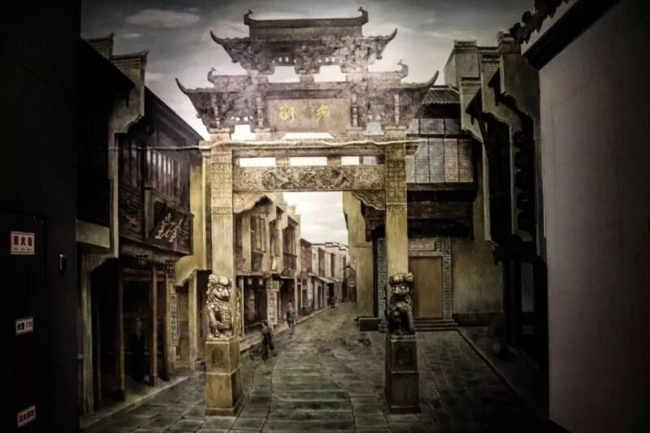
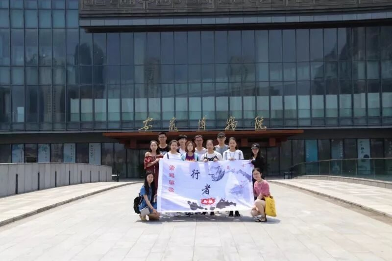

【行者无疆·拾遗皖徽】 探寻安徽省博物馆

合肥调研次日
安徽省博物院
主题：寻访历史，溯源非遗
悠悠华夏，浩浩长河，辽辽徽州，沃沃文明。酷暑艳阳中，走进安徽博物院，听，历史在倾诉......

1
大厅画展
入口正前方，一幅巨大的古徽州图景绘画作品映入眼帘，磅礴的历史气息推动行者脚步。两侧墙壁张贴几幅精美的油画、国画作品，画家们用细腻精致的笔触和独具匠心的想像，描绘出一幅幅时光流转里安徽的记忆。徽商胡雪岩和他的胡庆馀堂，徽剧程长庚和进京的“四大徽班”，太平天国安庆保卫战仿若尚未散去的硝烟，还有那些淮军将士御辱图强报国之志，皆从油墨色彩中跃然纸上，让人徜徉在这片历史的苍茫大海。
2
徽州史前文明
正式开始徽州文明史探寻之旅，从250万年前人字洞遗址开始展开人类文明发展历程，从旧石器时期到新时期时期，从陶器时期到玉器时期，史前文明一幕幕在眼前播放。黯淡的灯光给展厅增加了几分历史厚重感，仿若穿越时空，重回史前，行者领略到的不仅是绚丽多彩的氏族文化，还有令人惊叹的史前科技水平。
徽州文明史
星斗满天，变换多姿的星空展馆以夏侯灶的故事切入，展示了神秘而壮丽的遥远星河，点点荧光打在墙上就像一颗又一颗跳动的星星，全息室里抬头望去的一片星空因科技与美景的结合而格外逼真生动，有身临其境之感。
古陶、青铜、石器，商周器具带给人的感受总是神秘悠远；铸鼎、铜剑、酒樽，这精致的件件出土文物也都令人神往不已。置身古器之中，仿佛自己也身处那个遥远的年代，在聆听那些似有着千百岁灵魂的器具讲述它们的传奇。
徽派文化的兴盛源于徽商的繁荣，清朝建立后，徽商以盐业为中心，举凡典当、茶叶、木材和粮食贸易等，无不涉及，活动地域广泛，形成“无徽不成镇”的局面，徽商“贾而好儒”，对城镇经济和文化发胀做出了突出贡献。
徽州古建筑
高脊飞檐、粉墙黛瓦，乃是徽派古建筑最为吸引人的地方。探访安徽博物院，自然少不了这里的古建筑展厅。
徽派建筑，以民居、祠堂、牌坊为三绝。初入馆中，映入眼帘的便是一座整体迁移至馆内的徽派民居，其中陈设，一如主人生前。徽商经商世代，都祈求顺利和吉祥，如桌中的长鸣钟与其旁的瓶和镜，寓意“终生平静”，屋后的三眼井，寓意着“连中三元”。
徽州人以奢华精致的园林体现身份，或整修祠堂光大祖宗门面，或亦以牌坊褒奖徽州女人守节的风骨。再辅以三雕——砖雕、石雕和木雕，风格独特，让人叹为观止。如三雕馆的第一件“游春图”，镂空雕刻，以七十二块砖雕拼接而成，表现出古代徽州人民“渔樵耕读”的四个典型场景，技艺精湛，惟妙惟肖。而以罗东舒祠宝纶阁为代表的祠堂，则展现出徽州人对于祖先的尊敬和对皇帝的无上尊崇。
牌坊是徽州古建筑的又一大典型，著名的棠樾牌坊群七座牌坊拔地而起，诉说着一个个忠、孝、节、义的故事，而四面八柱的许国牌坊，遍饰雕刻，工致华丽，显示出许大学士的丰功伟绩。一个个活灵活现的古建筑构件和精美模型，向我们展示出当年徽州人民对生活的热爱，徽商的荣光和他们对未来的美好期许。
安徽文房四宝
安徽文化怎少的了文房四宝，笔墨纸砚。笔杆考究，选毫精良的宣笔；百年如石，一点如漆的徽墨；工艺繁杂，绵韧细腻的宣纸；石色青莹，坚润如玉的歙砚；皆体现着人的匠心独造与情思雅趣。（安徽文房四宝）
“岭南画派”杰出画家——欧豪年，善花草，山水，人物，兽畜。以画寄情，以情泼墨，极具感染力。（欧豪年美术馆）
图片丨行者无疆实践团
文字丨李心悦 徐信步 杨宇晴
责编丨 应雨珊 邓子孚
审核丨潘雯雯
者无疆实践团
QQ：2758025831

随行者一起认识世界
长按二维码关注